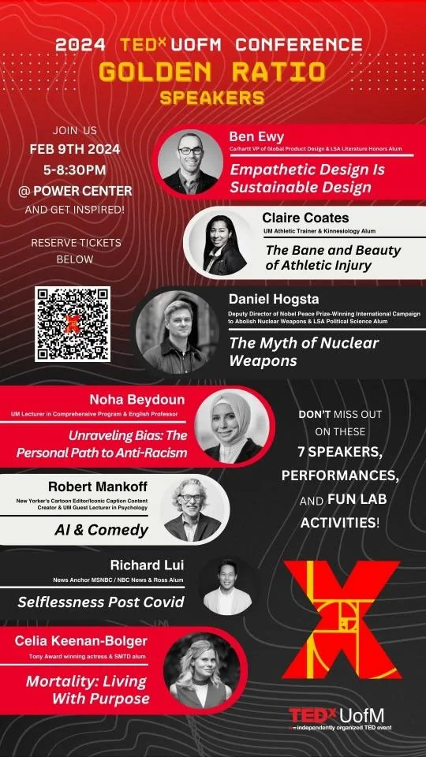

CHUMBA JOSEPH: It's Darkest Before the Prawn
I just hate the aesthetic of TedX. It's hard for me to pin down exactly why, but it feels like LinkedIn posting on the main stage. I kept seeing posters on the Michigan campus for an upcoming TedX event, and I wanted to riff on it.

I wish I had the original posters, cause they look exactly like the Chumba Joseph one, and I feel like I style-parodied the blurbs really well. But yeah, IDK I thought it was funny. I put some up but finished it too late for the intended bit: put them up right next to the real posters.